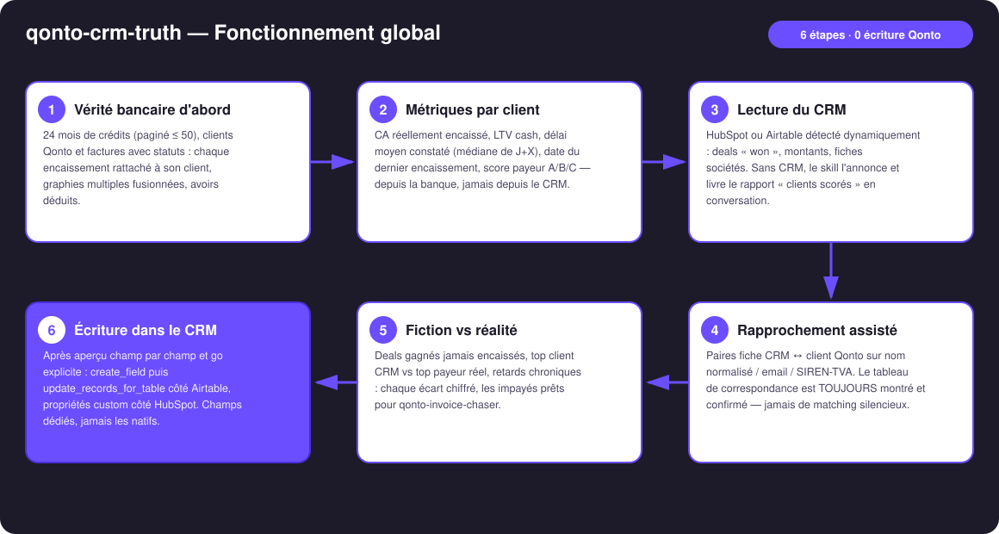
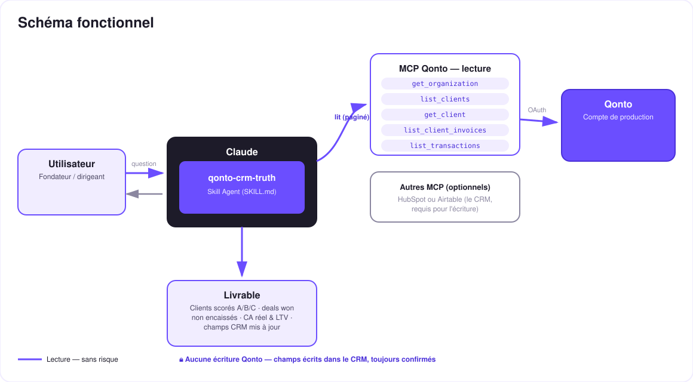

Le CRM qui ne ment plus — la banque comme source de vérité, écrite dans HubSpot ou Airtable.
Dans le CRM, un deal « Closed Won » ressemble à du chiffre d'affaires. Tant que l'argent n'est pas sur le compte, c'est une fiction. Le skill réconcilie les fiches CRM (HubSpot ou Airtable) avec la vérité bancaire Qonto :
Chaque deal gagné sans un euro correspondant sur le compte — listé avec montant, ancienneté et fiche CRM.
Le chiffre encaissé (pas déclaré), la LTV cash, le délai moyen constaté « paie à J+X », le dernier encaissement.
Calculé depuis la banque, formule affichée — jamais de score deviné (< 2 factures payées → non noté).
Propriétés custom HubSpot / colonnes Airtable — après matching confirmé et aperçu approuvé, jamais silencieux.
| Prérequis | Détail | Obligatoire |
|---|---|---|
| Compte Qonto production | Le skill s'adapte à toute organisation — get_organization d'abord, zéro donnée en dur | ✅ |
| Pays | Universel — aucune règle fiscale locale : identique pour tous les pays Qonto (FR, DE, ES, IT, AT, NL, BE, PT) | ℹ️ détecté |
| MCP Qonto connecté | Connecteur officiel (claude.ai / Claude Desktop), login OAuth | ✅ |
| MCP HubSpot ou Airtable | Le CRM — requis pour l'écriture. Sans lui : mode dégradé, rapport « clients Qonto scorés » dans la conversation | ⭕ requis pour écrire |
| Factures clients dans Qonto | Ancrent délais et matching ; sans elles, analyse par contrepartie des crédits, annoncée comme telle | ⭕ recommandé |
| Historique ≥ 6 mois | En dessous : dégradation honnête (scores « non noté » + avertissement) | ⭕ |


Zéro écriture bancaire : côté Qonto, le skill est en lecture pure — il ne peut pas toucher à l'argent. Les seules écritures visent le CRM, derrière deux verrous : le rapprochement fiche CRM ↔ client Qonto toujours montré et confirmé (jamais silencieux), puis l'aperçu exact de chaque valeur, approuvé explicitement dans la conversation.
| Score | Définition |
|---|---|
| A | Règlement médian dans les 5 jours après l'échéance, aucun impayé en cours |
| B | Paie toujours, mais en retard — retard médian ≤ 30 jours après échéance |
| C | Retard médian > 30 jours, ou facture impayée > 60 jours, ou deal « won » jamais encaissé |
| — | Moins de 2 factures payées → non noté (jamais de score deviné) |
⚠️ Le score décrit le comportement de paiement observé sur ce compte — pas une solvabilité générale ; rappelé dans chaque rapport.
| Champ | Contenu | Exemple (inventé) |
|---|---|---|
| CA réel (banque) | Cash encaissé sur la période | 24 300 € |
| LTV (banque) | Cash encaissé depuis toujours | 61 750 € |
| Délai moyen constaté | Médiane de J+X (émission → encaissement) | J+38 |
| Score payeur | A / B / C / non noté | C |
| Dernier encaissement | Date du dernier crédit rattaché | 12/05/2026 |
| Deals won non encaissés | Drapeau + montant cumulé | ⚠️ 2 deals · 9 800 € |
Côté Airtable : create_field pour les colonnes manquantes puis update_records_for_table par lots. Côté HubSpot : propriétés custom équivalentes. Jamais d'écrasement des champs natifs du CRM.
| Sortie | Format | Quand |
|---|---|---|
| Réponse dans la conversation | Tableaux markdown : clients scorés, deals non encaissés, correspondances, bilan d'écriture | Toujours — c'est la base |
| Écriture CRM | Propriétés custom HubSpot / colonnes Airtable (champs dédiés) | Après matching confirmé + go explicite |
| One-pager HTML | Classement CRM vs classement banque côte à côte, distribution des scores | Si l'hôte affiche les fichiers ; repli automatique sur les tableaux sinon |
La démo ≤ 3 min jointe à la PR suit le storyboard : le mensonge du CRM → vérité bancaire & matching confirmé → scores et écarts → l'écriture dans le CRM après confirmation → mode dégradé sans CRM. Toutes les données de démo sont inventées. Le script détaillé de tournage est conservé en interne (hors dépôt).
| Idée | Effort | Note |
|---|---|---|
Relance automatique des deals non encaissés via qonto-invoice-chaser | Faible | Cross-skill naturel — l'un découvre, l'autre agit |
Score payeur au moment du devis (list_quotes) | Moyen | Alerter avant de signer un payeur C — la vérité quand elle sert le plus |
| Historique du score (colonne datée) | Faible | Voir les clients qui glissent de A vers C ; même garde-fou d'écriture |
| Autres CRM (Notion, Salesforce…) par détection dynamique | Moyen | Même logique : lire, matcher, confirmer, écrire |